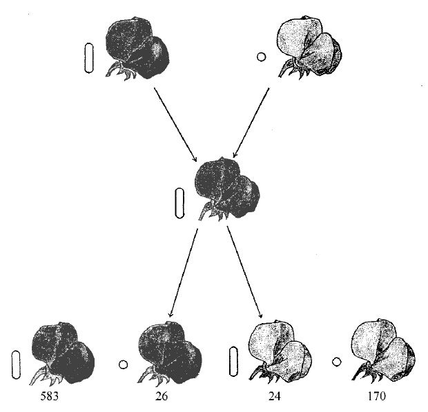
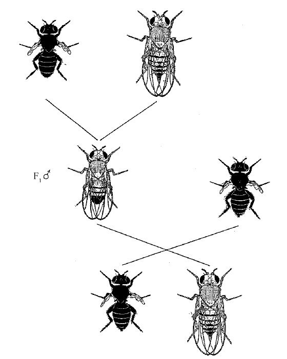

连锁
1900年重新发现了孟德尔的论文。又过了四年，Bateson和Punnett报道他们观察的数字结果，同两独立对的性状所应有数据并不符合。譬如，具有紫色花和长形花粉粒的香豌豆植株同具有红色花和圆形花粉粒的豌豆植株杂交。原来联合参加杂交的两型，在后代中也联合重现，其重现频率多于根据紫红与圆长自由分配所预测的数字（图9）。他们认为这种结果是由于从父母分别得来的紫长组合同红圆组合彼此排斥所致。现在称这种关系为连锁，即联合参加一次杂交的某些性状在后代里也表现联合的趋势。从消极意义上说，就是一些成对性状的对与对之间的组合并不是由机会来决定。

图9 紫花、长花粉粒的香豌豆同红花、圆花粉粒的豌豆杂交。
底行示子 2 的四种个体和它们之间的比例
仅就连锁来说，生殖质的划分似乎有它的限度。例如，我们知道黑腹果蝇Drosophila melanogaster所有的四百多种新的突变型只可能归成四个连锁群。
果蝇的四群性状中，有一群性状的遗传，同雌雄性别表现了一定的关系，因而说它们是性连锁的。这类性连锁的突变性状约有一百五十多种。有几种影响眼的颜色；有一些影响眼的形状、大小、或小眼分布的规则性。其他性状或涉及身体的颜色，或关系翅形或翅脉的分布，还有些则影响全身的刺和毛。
第二群约有120种连锁性状，包括蝇体各部的变化，但都和第一群的作用不同。
第三群约含130种性状，也涉及蝇体的各个部分。这些性状没有一个与以上两群的性状相同。
第四群的性状少，只有三种：一种影响眼的大小，在极端情形下甚至导致整个眼的消失；一种影响两翅的姿态；第三种则影响毛的长短。
现以下例说明连锁性状是如何遗传的。一只雄果蝇具有黑身、紫眼、痕迹翅和翅基斑点四种连锁性状（同属于第二群），使它同具有正常相对性状的野生型雌果蝇杂交（图10），这只雌蝇具有灰身、红眼、长翅和无斑四种性状。它们的子代都是野生型。如果使子代的雄蝇（注：这几种性状在雌蝇里并不完全连锁，所以本例中必须选用雄蝇为材料。）同具有黑、紫、痕、斑四种隐性性状的雌蝇杂交，孙代只有两种：一半具有四种隐性，和一个祖型相同；另一半为野生型，和另一祖型相同。

图10 黑身、紫眼、痕迹翅和斑点四种连锁，隐性性状与野生型
果蝇内的正常等位性（注：等位性即是相对性状，例如豌豆的紫花和红花，互为等位性，果蝇的黑身和灰身也互为等位性；又指位于同对两条染色体上同一位置的相对基因，这两个基因互为等位性。——译者注。）的遗传。子 1 雄蝇回交四种隐性的雌蝇。
杂种二代（图最底部）只得出祖父祖母两种组合
这里有两组连锁的相对（或等位）基因参加杂交。当雄性杂种的生殖细胞成熟时，一组连锁的隐性基因进入一半的精细胞，另一组野生型相对的等位基因则进入另一半野生型精细胞。把杂种一代的雄蝇同一只具有纯粹四种隐性基因的雌蝇杂交，便可以发现像以上所记载的两种精细胞的存在。纯隐性雌蝇所有的成熟卵子，各含一组四个隐性基因，任何一个卵子同含有一组显性野生型基因的精子受精，会产生野生型果蝇；任何一个卵子同含有四个隐性基因（与这里采用的雌蝇的基因相同）的一个精子受精，会产生黑身、紫眼、痕迹翅和斑点的果蝇。孙代得到的个体只有这两种。